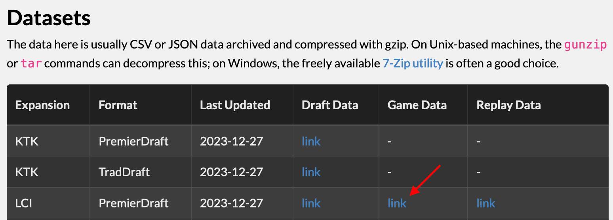
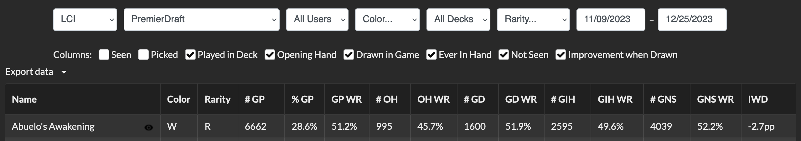

TL;DR
I demonstrate how to analyze win-rate statistics for Magic cards based on 17lands data in R.
About 17lands
One of my favorite pastimes is playing the one of the greatest games ever invented, Magic the Gathering (MtG). I have been an MtG fan almost since it first came it out (Fallen Empires). I had a fairly long hiatus, but have since returned to it recently and happily discovered a lively online community of players and, more importantly for this post, data nerds. One key source of data for those playing the draft format is 17lands, a website that collects user-contributed data to help players improve their game.
Here I will show how to analyze 17lands data in R. These are very complex datasets, and the possibilities for analysis are nearly limitless. I will start by recreating one of the basic 17lands analyses that most players are interested in: win-rate1.
Load the data
Fortunately, 17lands posts aggregated, anonymized datasets for us to analyze, so we don’t need to scrape anything2. The full list of datasets is at https://www.17lands.com/public_datasets. Here, we will analyze one of the more recent sets from 2023, Lost Caverns of Ixalan (LCI).
You will need to copy the link to the game data, which you can find as shown in this screenshot:

The datasets can be quite large, and can result in crashing due to insufficient memory when you try to load them. To avoid this, I recommend the data.table package, which is quite efficient and can usually handle these large files. data.table also includes a whole set of functions for wrangling data, but I am more used to tidyverse syntax, so I will use the latter (which works just fine on data read in with data.table). Another perk of the fread() function of data.table is that it can load a zipped file from the URL — you don’t even have to download it to separate file!
library(data.table)
library(tidyverse)# Specify URL of the CSV file
url <- "https://17lands-public.s3.amazonaws.com/analysis_data/game_data/game_data_public.LCI.PremierDraft.csv.gz"
# Load the data
games_data <- fread(url)
# Check dimensions of the data (rows and columns)
dim(games_data)[1] 823614 1475
Structure of the dataset
That is a big dataset! We can’t print the whole thing to the screen, so let’s just take a look at a subset of the data. I like the tidyverse glimpse() function for this. It prints out information vertically, so it works especially well when you have a lot of columns that otherwise would not fit on your monitor.
games_data %>%
# Grab the first row
slice(1) %>%
# Grab the first 30 columns
select(1:30) %>%
glimpse()Rows: 1
Columns: 30
$ expansion <chr> "LCI"
$ event_type <chr> "PremierDraft"
$ draft_id <chr> "976d867638234d0087008f387809c325"
$ draft_time <dttm> 2023-11-09 22:57:41
$ game_time <dttm> 2023-11-09 23:43:35
$ build_index <int> 0
$ match_number <int> 1
$ game_number <int> 1
$ rank <chr> "bronze"
$ opp_rank <chr> "None"
$ main_colors <chr> "RG"
$ splash_colors <chr> "WU"
$ on_play <lgl> FALSE
$ num_mulligans <int> 0
$ opp_num_mulligans <int> 0
$ opp_colors <chr> "WR"
$ num_turns <int> 13
$ won <lgl> FALSE
$ opening_hand_Abrade <int> 0
$ drawn_Abrade <int> 1
$ tutored_Abrade <int> 0
$ deck_Abrade <int> 1
$ sideboard_Abrade <int> 0
$ `opening_hand_Abuelo's Awakening` <int> 0
$ `drawn_Abuelo's Awakening` <int> 0
$ `tutored_Abuelo's Awakening` <int> 0
$ `deck_Abuelo's Awakening` <int> 0
$ `sideboard_Abuelo's Awakening` <int> 0
$ `opening_hand_Abuelo, Ancestral Echo` <int> 0
$ `drawn_Abuelo, Ancestral Echo` <int> 0Each row is one game. The first 18 columns or so give us game data like player rank, deck color, etc. The rest of the columns each start with names like opening_hand_, drawn_, tutored_, deck_, and sideboard_, followed by the name of a card. These are some of the most useful columns for gaining insight into how particular cards perform: they tell us where each card in the set was seen in a particular matchup. Some of the stats that 17lands users care the most about include which cards perform better; that is, what is the win-rate when a particular card is included in a deck, drawn, etc. We can calculate card specific win-rate statistics from these columns.
Are there any columns at the end (after all the card names) that we might be interested in though?
games_data %>%
# Exclude all the card columns
select(-matches("opening_hand|drawn_|tutored_|deck_|sideboard_")) %>%
slice(1) %>%
glimpse()Rows: 1
Columns: 20
$ expansion <chr> "LCI"
$ event_type <chr> "PremierDraft"
$ draft_id <chr> "976d867638234d0087008f387809c325"
$ draft_time <dttm> 2023-11-09 22:57:41
$ game_time <dttm> 2023-11-09 23:43:35
$ build_index <int> 0
$ match_number <int> 1
$ game_number <int> 1
$ rank <chr> "bronze"
$ opp_rank <chr> "None"
$ main_colors <chr> "RG"
$ splash_colors <chr> "WU"
$ on_play <lgl> FALSE
$ num_mulligans <int> 0
$ opp_num_mulligans <int> 0
$ opp_colors <chr> "WR"
$ num_turns <int> 13
$ won <lgl> FALSE
$ user_n_games_bucket <int> 50
$ user_game_win_rate_bucket <dbl> 0.56Yes! There are two more columns of interest after all the card columns: user_n_games_bucket and user_game_win_rate_bucket. What do these mean? Let’s see what kind of values they contain.
games_data %>%
count(user_n_games_bucket) user_n_games_bucket n
1: 1 1585
2: 5 7044
3: 10 115547
4: 50 181307
5: 100 483041
6: 500 29872
7: 1000 5218user_n_games_bucket describes the number of games played by the user in a given row. Ordinarily, you would expect this to have a wide range of numbers, but it only contains seven distinct values. As the column name suggests, the raw data have been aggregated into “buckets”. So 1 actually means some range of games played by that user (probably one to four), not exactly one game. This has been done to protect the privacy of 17lands users. We can see that the majority of users have played around 100 games.
What about user_game_win_rate_bucket?
games_data %>%
count(user_game_win_rate_bucket) user_game_win_rate_bucket n
1: 0.00 492
2: 0.10 66
3: 0.12 32
4: 0.14 222
5: 0.16 131
6: 0.18 129
7: 0.20 259
8: 0.22 189
9: 0.24 1685
10: 0.26 210
11: 0.28 881
12: 0.30 1731
13: 0.32 2637
14: 0.34 3605
15: 0.36 4375
16: 0.38 4300
17: 0.40 11308
18: 0.42 20421
19: 0.44 26808
20: 0.46 42789
21: 0.48 46269
22: 0.50 78871
23: 0.52 83124
24: 0.54 91743
25: 0.56 100421
26: 0.58 82407
27: 0.60 80046
28: 0.62 53942
29: 0.64 33408
30: 0.66 20355
31: 0.68 13197
32: 0.70 7225
33: 0.72 3147
34: 0.74 2400
35: 0.76 1784
36: 0.78 880
37: 0.80 788
38: 0.82 348
39: 0.84 197
40: 0.86 400
41: 0.88 9
42: 0.90 117
43: 0.92 28
44: NA 238
user_game_win_rate_bucket nuser_game_win_rate_bucket describes the win-rate of the user in a given row. It is also aggregated, but at a finer scale: the buckets are in 2% win-rate increments. The mode of the win-rate is 56%. This demonstrates an important point when using 17lands data: 17lands users are slightly more skilled than the average player overall. So your point of reference for judging whether a card improves win-rate should be 56%, not 50%3.
These data are useful for partitioning the dataset into high-performing (high win-rate) vs. lower performing (low win-rate) users.

Calculate win-rate
Win-rate per card
The data provided by 17lands are close to “raw” form, with a single row per game. How can we go from that to win-rate?
Below I show a function that takes the raw game data and calculates win-rate statistics for a single card. To learn more about what each statistic means, see the 17lands definitions.
card_wr <- function(card, games_data) {
games_data %>%
# Select a single card and whether the game was won or not
select(
matches(glue::glue("won|{card}"))
) %>%
# Since we only have one card now, strip the card name from
# the column names
rename_with(~ str_remove_all(., glue::glue("_{card}"))) %>%
# We only care about decks that played that card
filter(deck > 0) %>%
# Add stats:
# - how many times the card was drawn (game_in_hand),
# - how many times it was seen during a game (game_seen),
# - if it was not seen during a game (game_not_seen)
rowwise() %>%
mutate(
game_in_hand = sum(opening_hand, drawn),
game_seen = sum(game_in_hand, tutored),
game_not_seen = deck - game_seen,
) %>%
ungroup() %>%
# Adjust Number of Games Not Seen
# "If more copies are seen in a game than are in the maindeck,
# this value is set to 0."
mutate(
game_not_seen = case_when(
game_not_seen < 0 ~ 0,
.default = game_not_seen
)
) %>%
mutate(
opening_hand_win = opening_hand * won,
game_played_win = deck * won,
game_in_hand_win = game_in_hand * won,
game_not_seen_win = game_not_seen * won
) %>%
summarize(
card = card,
games_played_n = sum(deck),
game_played_wr = sum(game_played_win) / games_played_n,
opening_hand_n = sum(opening_hand),
opening_hand_wr = sum(opening_hand_win) / opening_hand_n,
game_in_hand_n = sum(game_in_hand),
game_in_hand_wr = sum(game_in_hand_win) / game_in_hand_n,
game_not_seen_n = sum(game_not_seen),
game_not_seen_wr = sum(game_not_seen_win) / game_not_seen_n,
iwd = game_in_hand_wr - game_not_seen_wr
)
}Let’s try it out!
card_wr("Abuelo's Awakening", games_data) %>%
glimpse()Rows: 1
Columns: 10
$ card <chr> "Abuelo's Awakening"
$ games_played_n <int> 6662
$ game_played_wr <dbl> 0.5118583
$ opening_hand_n <int> 995
$ opening_hand_wr <dbl> 0.4572864
$ game_in_hand_n <int> 2595
$ game_in_hand_wr <dbl> 0.4955684
$ game_not_seen_n <dbl> 4039
$ game_not_seen_wr <dbl> 0.5224065
$ iwd <dbl> -0.02683814We can compare this to the actual stats on 17lands (notice you will need adjust the start and end dates to match the data we downloaded, since there is a lag between posted datasets and stats on 17lands).

Looks pretty good!

Win-rate for a set
The next step is to scale-up and apply our win-rate counting function to the whole set.
First, let’s make a vector of all the cards in LCI:
# Extract card names from column titles
cards <- games_data %>%
select(matches("deck_")) %>%
colnames() %>%
str_remove_all("deck_")
# Have a look at some of the card names
head(cards)[1] "Abrade" "Abuelo's Awakening" "Abuelo, Ancestral Echo" "Abyssal Gorestalker" "Aclazotz, Deepest Betrayal" "Acolyte of Aclazotz" Next, use the function on each one, and save the results to a dataframe:
win_rate <-
map_df(cards, ~card_wr(., games_data))
win_rate# A tibble: 291 × 10
card games_played_n game_played_wr opening_hand_n opening_hand_wr
<chr> <dbl> <dbl> <dbl> <dbl>
1 Abrade 275876 0.565 47592 0.564
2 Abuelo's Awaken… 6662 0.512 995 0.457
3 Abuelo, Ancestr… 27197 0.560 4654 0.564
4 Abyssal Goresta… 19564 0.511 2955 0.513
5 Aclazotz, Deepe… 14642 0.591 2512 0.682
6 Acolyte of Acla… 51506 0.490 8344 0.461
7 Acrobatic Leap 40362 0.555 6033 0.540
8 Adaptive Gemgua… 142381 0.545 22988 0.534
9 Akal Pakal, Fir… 37520 0.579 6579 0.651
10 Akawalli, the S… 41977 0.530 7094 0.526
# ℹ 281 more rows
# ℹ 5 more variables: game_in_hand_n <dbl>, game_in_hand_wr <dbl>,
# game_not_seen_n <dbl>, game_not_seen_wr <dbl>, iwd <dbl>We can see the top-performing cards by sorting by game-in-hand win-rate:
win_rate %>%
arrange(desc(game_in_hand_wr))# A tibble: 291 × 10
card games_played_n game_played_wr opening_hand_n opening_hand_wr game_in_hand_n game_in_hand_wr game_not_seen_n game_not_seen_wr iwd
<chr> <dbl> <dbl> <dbl> <dbl> <dbl> <dbl> <dbl> <dbl> <dbl>
1 Bonehoard Dracosaur 16632 0.607 2906 0.700 7027 0.704 9588 0.535 0.169
2 Aclazotz, Deepest Betrayal 14642 0.591 2512 0.682 6486 0.690 8076 0.512 0.178
3 Palani's Hatcher 31805 0.594 5407 0.672 13034 0.674 18484 0.536 0.138
4 Kitesail Larcenist 36542 0.597 6503 0.646 15896 0.656 19906 0.545 0.110
5 Unstable Glyphbridge 33272 0.590 5712 0.635 14337 0.653 18629 0.539 0.114
6 Magmatic Galleon 34727 0.589 5722 0.651 13919 0.653 20509 0.544 0.109
7 Sanguine Evangelist 34346 0.593 6157 0.668 14469 0.653 19722 0.549 0.103
8 Huatli, Poet of Unity 14170 0.581 2536 0.663 6006 0.650 8082 0.529 0.122
9 Breeches, Eager Pillager 34149 0.596 6261 0.659 14371 0.649 19435 0.555 0.0946
10 Sentinel of the Nameless City 27881 0.583 5022 0.673 12111 0.645 15621 0.535 0.110
# ℹ 281 more rows
Wrap-up
I hope this post helps you analyze 17lands data in R. So far, we have only reproduced the win-rate statistics, which are available on 17lands anyways. In the future, I plan to demonstrate other custom analyses that build on this post to explore the data in more detail.
Please comment in the discussion if you have any ideas for analyses to try!

Reproducibility
Images
Card images copyright Wizards of the Coast obtained via the Scryfall API and are considered to qualify as fair use.
Footnotes
If you just care about actually looking at win-rate statistics, you should head straight to the 17lands card data. This post is for those folks interested in learning how to calculate the stats on their own so they can use them for further analyses↩︎
Scraping is discouraged by 17lands.↩︎
Average win-rate also varies from set to set, so you should keep that in mind when comparing stats between sets.↩︎
Reuse
Citation
BibTeX citation:
@online{2024,
author = {},
title = {Getting Started with 17lands Data in {R}},
date = {2024-01-01},
url = {https://www.joelnitta.com/posts/17lands-intro/},
langid = {en}
}
For attribution, please cite this work as:
“Getting Started with 17lands Data in R.” 2024. January 1,
2024. https://www.joelnitta.com/posts/17lands-intro/.